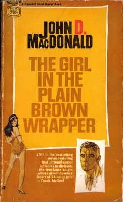

The Girl in the Plain Brown Wrapper
The Girl in the Plain Brown Wrapper (1968) is the tenth novel in the Travis McGee series by John D. MacDonald. The plot focuses on McGee's investigation of a beautiful young woman who is mysteriously losing her mind without any apparent physical or mental disease. Along the way, he discovers various troubling facets to the small Florida town where she resides.
Summary
The back of the first edition states, "The incomparable Travis McGee is back in a brand-new adventure! Poking around where he's not wanted - as usual - McGee delves into the mystery of a rich and beautiful wanton who happens to losing her mind, a little piece at a time. As he probes, he uncovers some of the strange corruptions that simmer behind the respectable facade of a quiet Florida town..." Several years before the events of the novel, McGee had brief romance with a widow who was grieving the death of her husband. Years later, as she was dying of cancer, she mailed a letter to him asking McGee to watch out for her eldest daughter who was behaving oddly. McGee finds possible a connections to the death of a physician who treated the daughter, and uncovers an investment fraud scheme.
Title
The title phrase "girl in a plain brown wrapper" has a multiple meaning. It is used on page 214 of the first edition referring to the body of one of the female characters who was wrapped heavy brown paper to conceal her identity as McGee continues his investigation, and also alludes to a brown-skinned African-American hotel maid who gives vital assistance to McGee. At the time of the novel's publication, a package being delivered in a plain brown wrapper was also understood as implying erotic, illegal or potentially embarrassing material.[1] The McGee novels all had colors in their titles, a mnemonic device Macdonald invented to help readers recall which books in the series they had read
References
- Congressional Record: Proceedings and Debates of the 91st Congress. (1969). United States: U.S. Government Printing Office.
- Merril, Hugh (2000). The Red Hot Typewriter: The Life and Times of John D. MacDonald. Thomas Dunne Books/St. Martin's Minotaur. ISBN 978-0-312-20905-6.
- Geherin, David (1982). John D. MacDonald. F. Ungar Pub. Co